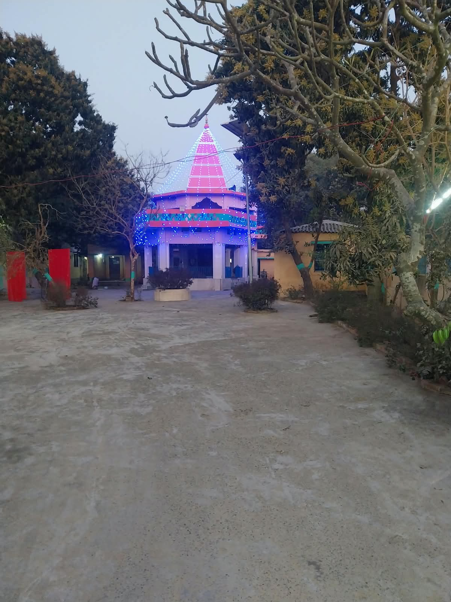
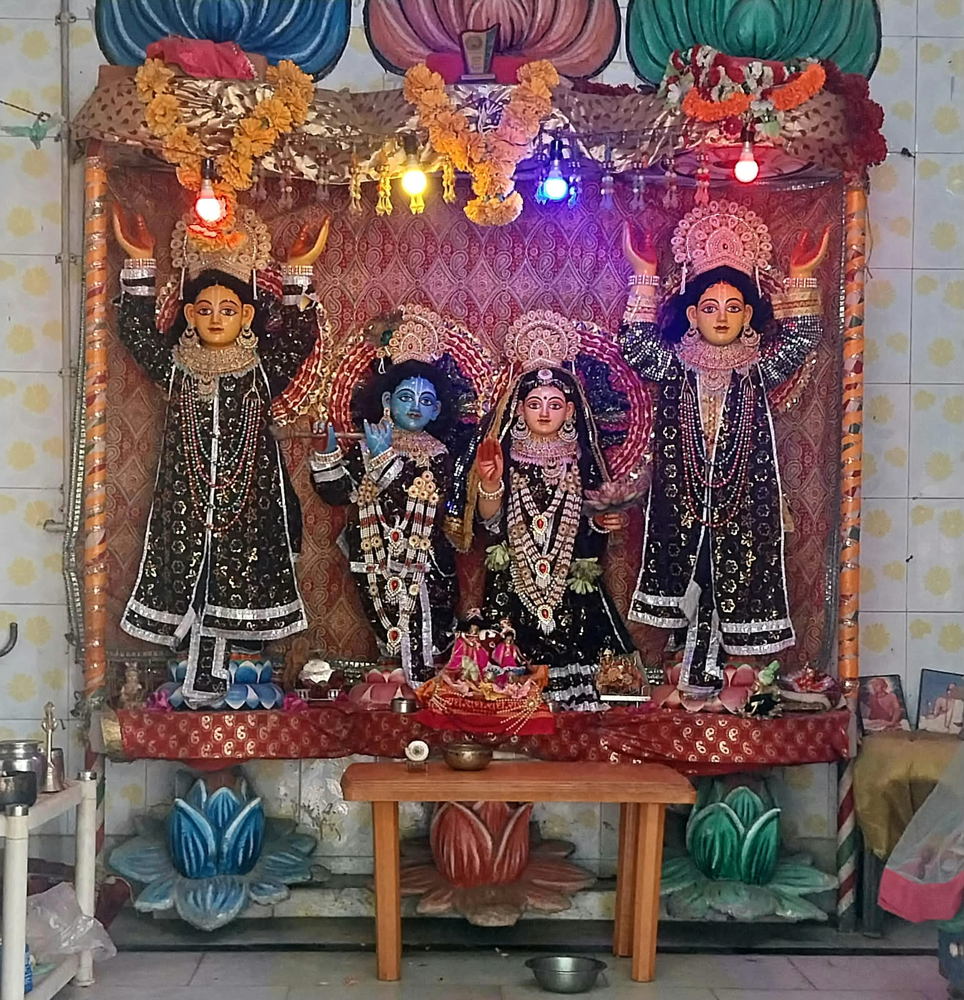
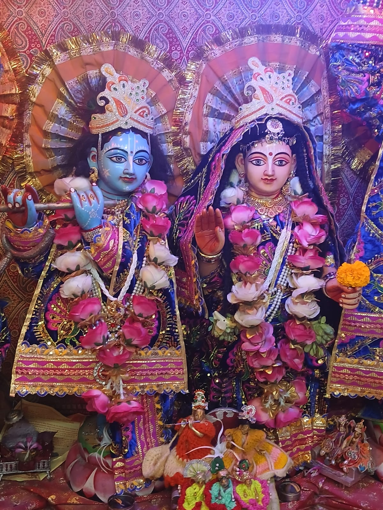
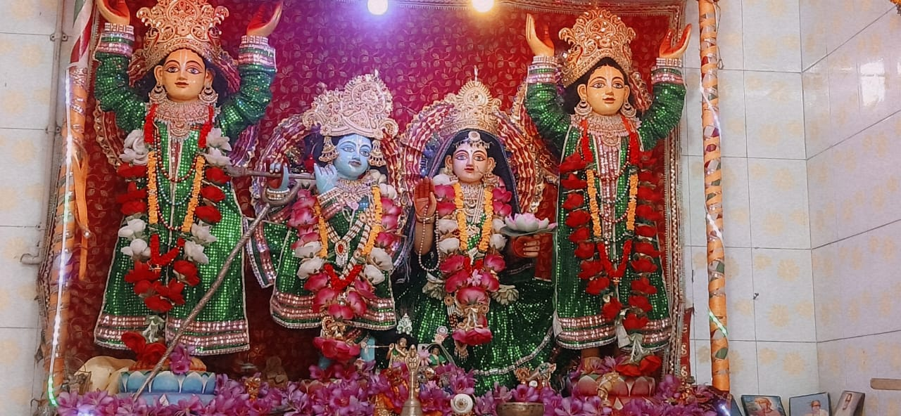
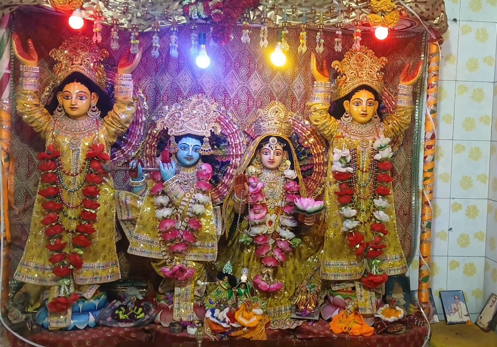
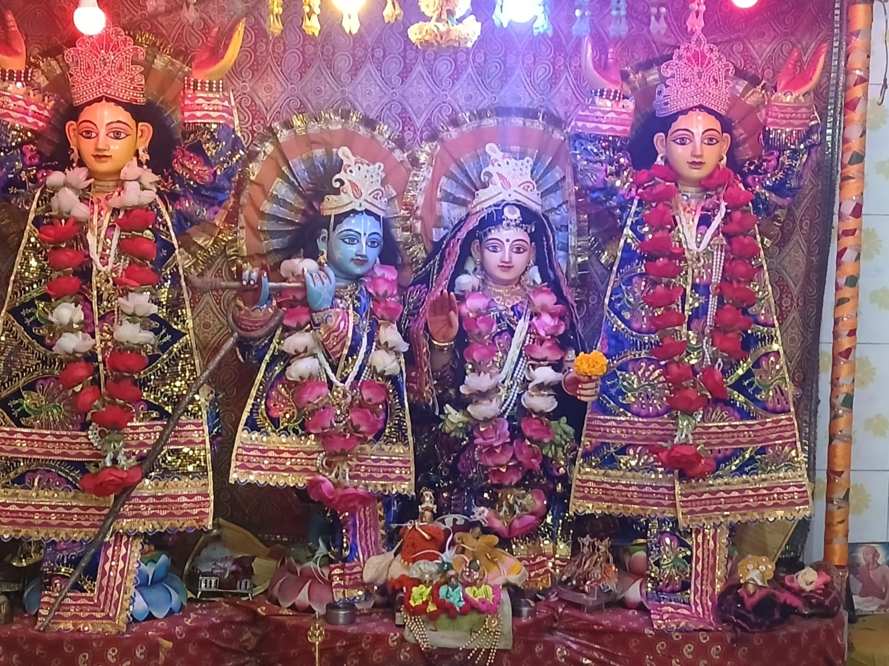
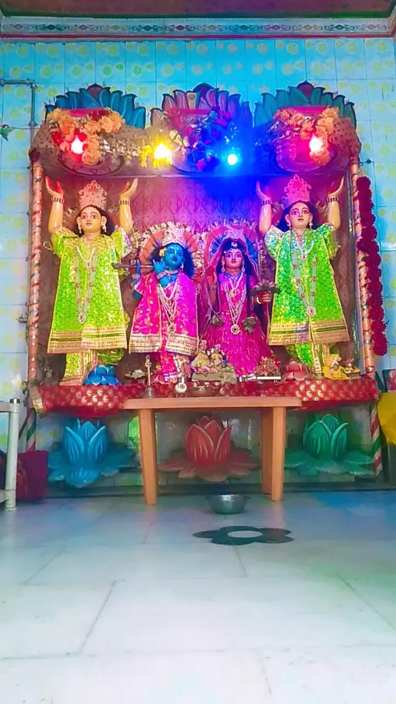
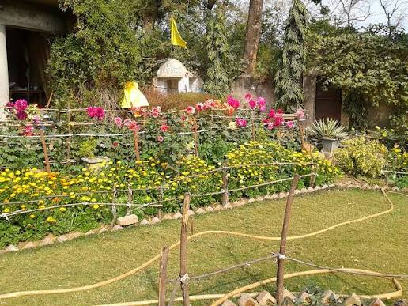
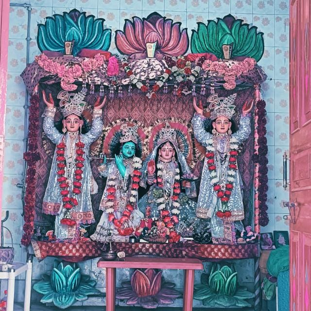
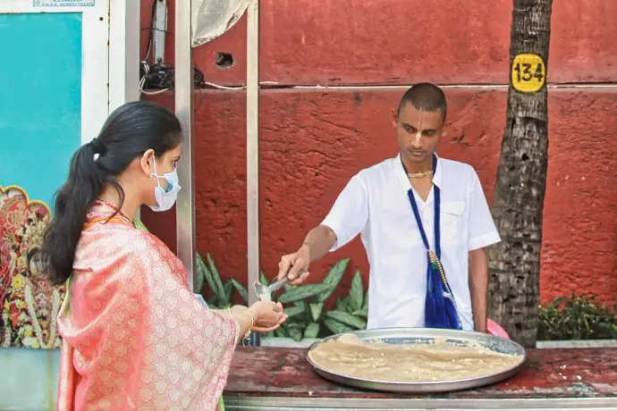

Temple Entrance

The entrance welcomes devotees into a serene spiritual atmosphere. It marks the beginning of a sacred journey filled with prayer, devotion, and remembrance of the Divine.
Welcome to Shri Radha Govind Satsang Ashram, a sacred abode of devotion, spiritual learning, and divine grace. Discover the beautiful surroundings, sacred spaces, devotional traditions, and timeless heritage of our Ashram. Every corner reflects the spirit of bhakti and offers devotees a peaceful space to connect with the divine.
When the flow of the Mahaprabhu Bhakti Movement reached Mithila, Gaudiya Vaishnavas envisioned establishing a sacred dham where the eternal seva of Shri Radha Krishna could be performed and festivals celebrated with devotion throughout the year. This vision led to the establishment of Shri Radha Krishna Dham at Lagma, Rambhadrapur. With the dedicated efforts of nearby villagers and sadhu-sants in 1978, the foundation of the temple was laid. This historic milestone was celebrated with a grand Kalash Shobha Yatra, a continuous 30-day Bhagwat Mahayagya, and 24-hour continuous Naam Sankirtan. Several revered saints, including Shri Shyam Sunder Das and Shri Radha Vallabh Baba of Ratanpur, graced the occasion. Their presence marked an important chapter in the growth of the Bhakti Movement in Mithila, laying the foundation for a lasting tradition of worship, satsang, and seva.
Explore the spaces where devotion comes alive and experience the spiritual traditions of our Ashram.

The entrance welcomes devotees into a serene spiritual atmosphere. It marks the beginning of a sacred journey filled with prayer, devotion, and remembrance of the Divine.






Behold the enchanting darshan of Shri Radha Krishna and experience the peace and grace associated with daily shringar and worship. Each darshan offers devotees a moment for prayer, reflection, and loving remembrance of the Divine Couple.

The courtyard provides a peaceful setting for devotees to gather, walk, reflect, and spend time in spiritual contemplation. It is a place to pause from everyday life and immerse oneself in the tranquil atmosphere of the Ashram.

Daily worship and seva express the loving devotion of the Ashram. Through Mangala Aarti, Sandhya Aarti, bhog offerings, and heartfelt prayers, devotees participate in sacred traditions centered on the service of the Lord.

Dedicated to Hari Naam Sankirtan, Srimad Bhagavatam discourses, and congregational devotional singing, this space brings devotees together in the shared experience of chanting, listening, and spiritual learning.

The Anand Prasad Mandap represents the spirit of hospitality and selfless service. Here, sanctified Mahaprasad is lovingly served to visiting sadhus, pilgrims, and devotees, reflecting the importance of sharing and community in devotional life.